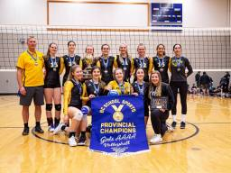
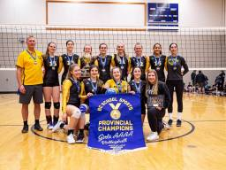
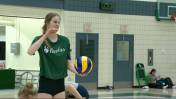
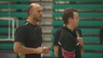
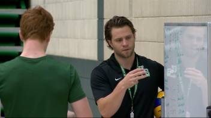
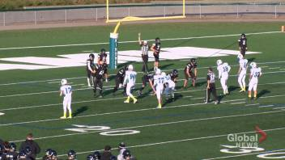

UPDATE: Kelowna girls capture second consecutive B.C. 4A volleyball championship
 The top-ranked Kelowna Owls are into Saturday morning’s semifinals at the championships in Langley.
 The top-ranked Kelowna Owls are into Saturday morning’s semifinals at the championships in Langley.
 Mandi Fraser said she relies on her brothers Brian and Colin to provide guidance as she continues to improve her volleyball game.
 Long-time University of Alberta Golden Bears volleyball coach will still be around the gym, but he won’t be on the bench when the team takes the court this season.
 Sean McKay is looking forward to what he hopes will be a long run with the Saskatchewan Huskies men’s volleyball team.
 Boys’ football and volleyball are featured in the Oct. 8 segment of High School Huddle with Brenden Purdy.